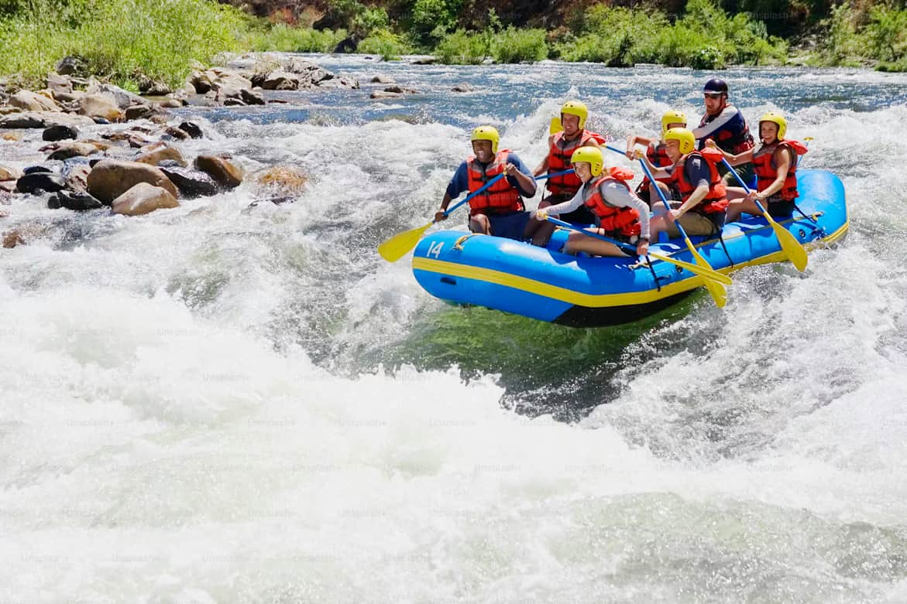
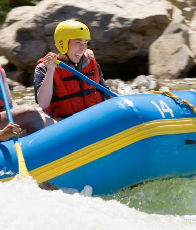

At Extreme Rapids Company, our purpose is to bring thrill and excitement to every river adventure. Our mission is to provide safe, unforgettable white water rafting experiences for all skill levels. We believe in teamwork, respect for nature, and pushing limits while having fun. Our motto: "Ride the Rapids, Feel the Extreme!"


Extreme Rapids Company
History
Extreme Rapids was founded in the year 2025 by a group of adventurous friends who loved rivers and excitement. Over the years, we have paddled through countless rapids, explored hidden river paths, and perfected the art of thrilling white water rafting. From small weekend trips to epic river expeditions, our company has grown while keeping the spirit of adventure alive. We continue to push limits, laugh a lot, and inspire others to embrace the extreme!